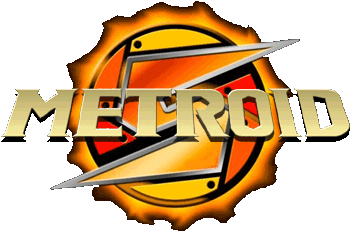
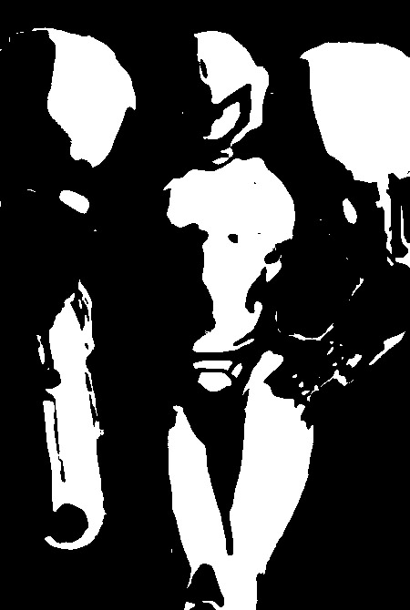
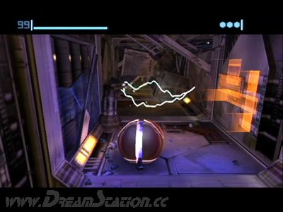
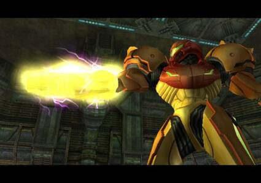

You are the Legendary bounty hunter,Samus Aran. You have been hired to
destroy a Space Pirate base that has been showing massive energy levels.
Your mission is to find the purpose of the increased Pirate activity and
put a stop to it. This is a very dangerous mission, but that is nothing new.
Now the mission briefingis as follows:

This is you, Bounty hunter. (sweet isn't it?)

This is you in morphball form. In this form, you can slip into small
places you can't fit into otherwise. Aslo in morphbal, you can drop bombs
to uncover hidden areas. (you are the ball)

The glowing thing is your beam cannon. This is your main means of attacking
and defending. There are different beams that can be obtained. You can also
get missiles that can be used to open certain doors and destroy enemies
Are you ready? Now it is time to enter the space pirates' ship.Lets
GOOO!!!!